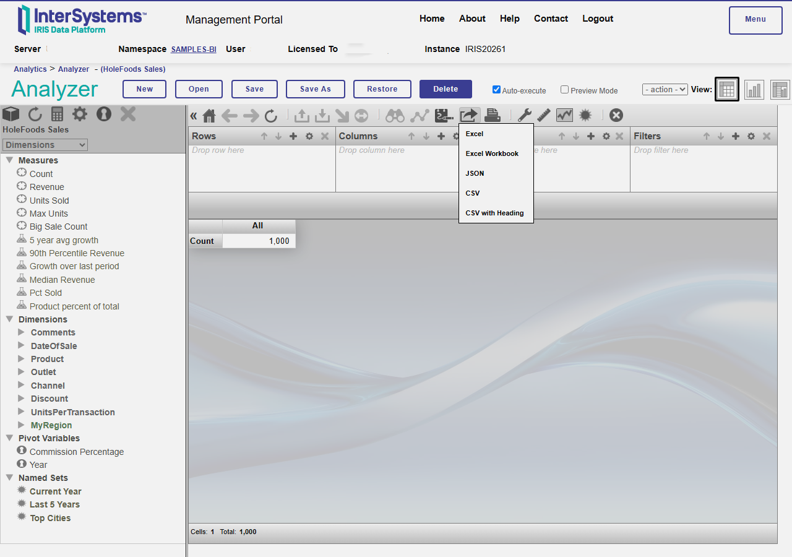

The Analyzer's stock "Export to Excel" button writes an HTML table with an
.xls extension - Excel opens it, but it's not a real workbook. This adds
an actual .xlsx (real cell types, number formats, a genuine Excel Table)
and a typed JSON export, wired directly into the Analyzer's own Export dropdown.
This container comes with Samples-BI
preloaded, so everything below works immediately.

Try it
- Live demo
- A canned MDX query, no pivot needed - download a real .xlsx or .json in one click.
- Analyzer, on HoleFoods
- Build a pivot, then use the same "Excel Workbook"/"JSON" buttons shown above.
- Export a whole dashboardmulti-sheet
- Open the sample dashboard, click Export Dashboard at the bottom - one workbook, one sheet per widget, no setup needed.
- Management Portal
- Login
_SYSTEM/SYSif you want to poke around namespaces and classes directly.